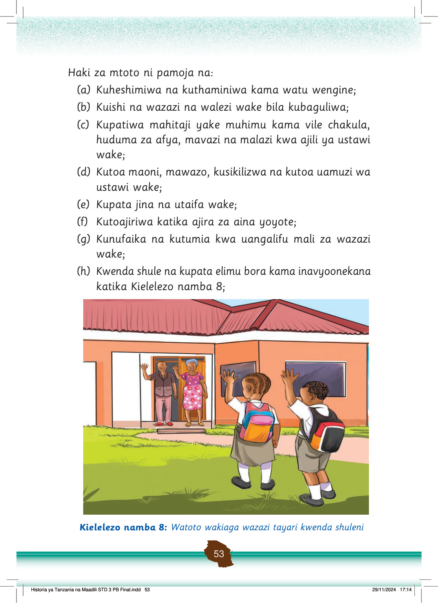

Haki za mtoto ni pamoja na:
(a)
Kuheshimiwa na kuthaminiwa kama watu wengine;
(b)
Kuishi na wazazi na walezi wake bila kubaguliwa;
(c)
Kupatiwa mahitaji yake muhimu kama vile chakula, huduma za afya, mavazi na malazi kwa ajili ya ustawi wake;
(d)
Kutoa maoni, mawazo, kusikilizwa na kutoa uamuzi wa ustawi wake;
(e)
Kupata jina na utaifa wake;
(f)
Kutoajiriwa katika ajira za aina yoyote;
(g)
Kunufaika na kutumia kwa uangalifu mali za wazazi wake;
(h)
Kwenda shule na kupata elimu bora kama inavyoonekana katika Kielelezo namba 8;
Watoto wawili wenye sare na mabegi wanawaaga wazazi wao nyumbani wakielekea shuleni.
Kielelezo namba 8: Watoto wakiaga wazazi tayari kwenda shuleni